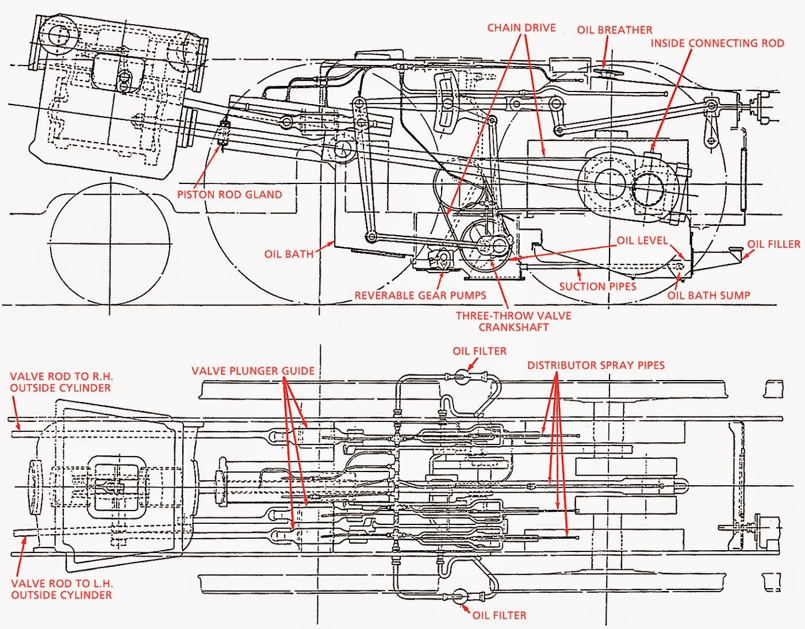
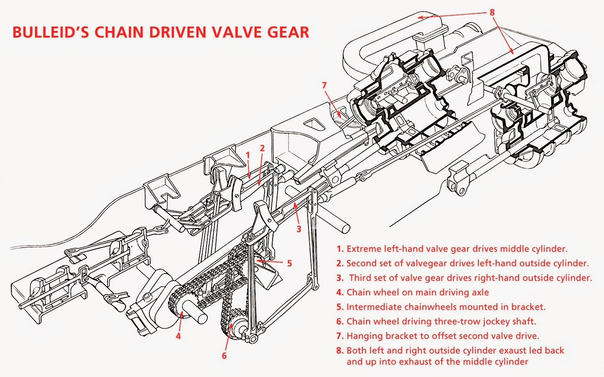
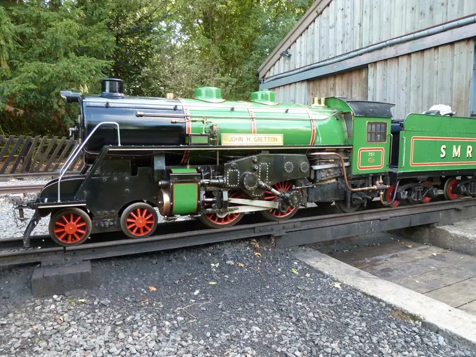
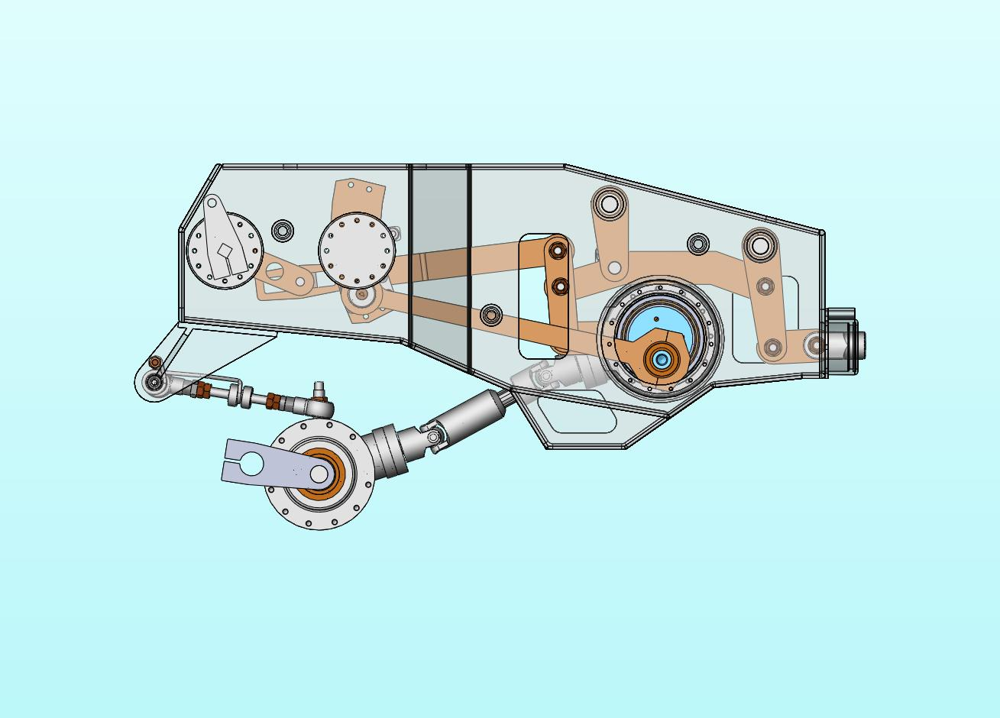

Updated: 3/19/2025 US Format
Oliver Bulleid designed the valve gear of his pacifics with the intention of creating a light, economical, and easy to maintain locomotive. Bulleid chose to miniaturize walschaerts motion in order to reduce the total weight of the locomotive, reduce reciprocating wear , and so all of the valve gear sets could be enclosed in an oil bath. Bulleid used walschaerts arrangements with the eccentrics angled 90 degrees downward, allowing the eccentrics to move in phase with the crank pins. This gear is very similar to Kitson-Hawthorn valve gear installed on Great Western 1338. In isolation these miniaturized sets are very simple, they are in fact more simple than a typical full sized walschaerts set. However, in order to supply the gear with a reference motion and make use of the resultant translated motion on otherwise full sized engine parts, extra complications were necessitated. The rotary motion of the center axle is transferred one to one to an auxiliary crank shaft via two chains and an intermediary shaft. From there the walschaerts sets can move synchronously with the rest of the engine. Since the gear sets are miniaturized, the resultant motion is also miniaturized in comparison to the travel of typical piston valves. However, miniaturizing piston valves would reduce opening sizes for admission and exhaustion of steam, increasing venturi loses ,decreasing efficiency and available power. The miniature resultant motion has to be stepped up by rocking levers to drive full sized piston valves. These rockers step up motion by a ratio of roughly 8:3 (2.66..:1), but simultaneously step down leverage a proportional amount. Much like an internal combustion engine, the components are partially immersed in an oil bath about 2 inches (51 mm) deep. Mechanical pumps draw from the bath to spray oil onto the components of the gear while they are in motion via perforated pipes. The inside big end is continuously submerged and resurfaced from the bath while in motion (splash lubricated).
Schematic: |
Cut Away Diagram: |
|---|---|
|  |  |
In Facts About 'Tugboat Annie' Curly Lawrence states,
"Another point to be considered, and which has a very great influence on the working life of a set of valve gear, is the strain on the working parts. The power required to drive the valve on the Bulleid arrangement is stepped up virtually three to one by the rocking-shaft, which was the cause of a whole succession of failures when the locomotives first went into service. They bent and broke and were replaced by stronger ones until the shorter arm became almost like an eccentric; the terrific strain on the rest of the gear needs no emphasising. This was responsible for some of the broken chains."
Stress was great on all of the working components, but was particularly problematic for the chains, which could suffer severe stretch, throwing the valve timing out of phase, reducing the efficiency of the engine. If it were possible to run the valves without a leverage divider the problems with the gear would be appreciably lessened. The components used in the beginning were simply not strong enough to tolerate the strain put upon them. Increasing their strength helped to but did not totally alleviate this issue.
Another serious issue was the rate of oil consumption. The large size of the bath made it more susceptible to leaks. The bath would leak oil onto the tracks, reducing adhesion. It also tended to leak into the boiler lagging creating a combustion hazard. Obviously this oil would have to be continually replenish, adding maintenance costs that the gear was supposed to reduce.
If the strengths of the components are high enough, given the demands, it is possible to make a relatively small reliable and very long lasting enclosed Walschaerts set drive larger valves. Richard Coleby of the ASTT, invented his own fully enclosed miniaturized Walschaerts set. He was well aware of the strain problems that faced the Bulleid Pacific gear and thus engineered the components to be highly resistant to strain. The factor by which the resultant motion of the gear is stepped up is (2.5:1), slightly less than the Bulleid Gear. The levers are placed in a modular package outside of the frames making them easy to remove and reinstall for inspections and maintenance.
"It has a small pump (not shown) that is driven off the expansion link and this draws oil from the sump and pumps it up to a small header tank placed on top of the enclosure. From there it is distributed via small tubes to 5 different locations on the valve gear. Only the crank assembly itself is oiled from the oilbath in the sump. I did this because I was not convinced that splash lubrication would reach near the output lever or the expansion link and I think this has been borne out in practice to be a wise precaution. The oil level is only about 1.5" above the bottom of the sump." (Richard)
Since the enclosed space is so small the amount of oil in circulation is minimal compared to the massive Bulleid oil bath. Oil leakage is minimal. The level is checked once every year and toped off every few years. The input motion of the gear is transferred from the drive shaft using shafts with universal joints and bevel gears which have proven to be strong for their size compared to chains.
The Gear Installed on John H. Gretton |
Opaque CAD Diagram: |
|---|---|
|  |  |
This was a valve gear design by Richard for a 4-8-0 + 0-8-4 garratt WWLR #7. The operation of it is self explanitory. Rocker shafts were chosen as a substitute for bevel gears to reduce costs. This engine was never built.
If Robert Stephenson were alive to see Bulleid's Pacifics I imagine he would have said the design suffered from too much innovation, just as he did with Novelty of the Railhill Trials. The gear is an interesting and novel experiment, I am glad that he undertook it since no one else did, but ultimately the gear proved to not be good enough. Richard Coleby proved that with enough careful though and development a better gear with very similar properties could be made. In the long run it would have been less costly to use standard walschaerts sets from the beginning.